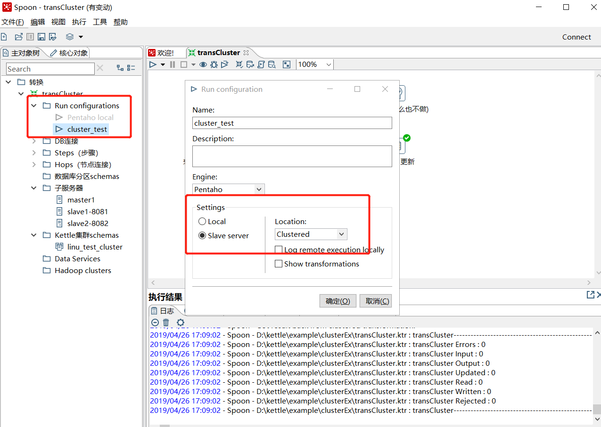
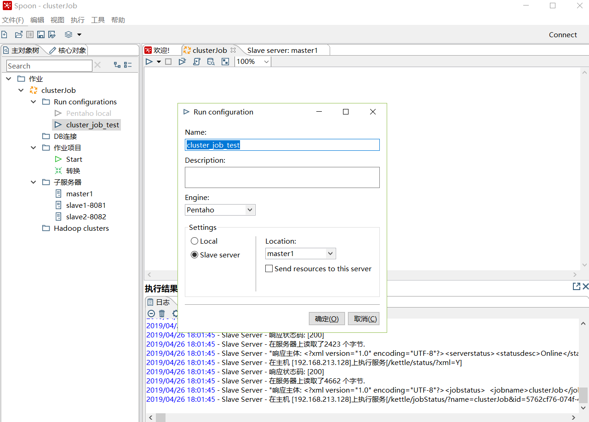

<!DOCTYPE html>
<html>
<head><meta name="generator" content="Hexo 3.9.0">
    <meta charset="utf-8">

    

    
    <title>Kettle 集群开发 | Hexo</title>
    
    <meta name="viewport" content="width=device-width, initial-scale=1, maximum-scale=1">
    
        <meta name="keywords" content>
    
    <meta name="description" content="trans集群开发新建trans，在主对象树子服务器中右键，新建，填写服务器连接信息。 注意：该部分配置信息需要和carte-config-m、aster，-8080.xml配置信息一致，由于是主服务器，需要勾选最后一栏。 然后填写两个子服务器信息，需要和-8081.xml和-8082.xml中的信息一致。  注意  服务器的名称一定要与pwd文件夹下面的配置文件属性所对应的值是一致的。所新建的子">
<meta property="og:type" content="article">
<meta property="og:title" content="Kettle 集群开发">
<meta property="og:url" content="http://yoursite.com/2019/04/24/kettle3/index.html">
<meta property="og:site_name" content="Hexo">
<meta property="og:description" content="trans集群开发新建trans，在主对象树子服务器中右键，新建，填写服务器连接信息。 注意：该部分配置信息需要和carte-config-m、aster，-8080.xml配置信息一致，由于是主服务器，需要勾选最后一栏。 然后填写两个子服务器信息，需要和-8081.xml和-8082.xml中的信息一致。  注意  服务器的名称一定要与pwd文件夹下面的配置文件属性所对应的值是一致的。所新建的子">
<meta property="og:locale" content="en">
<meta property="og:image" content="http://yoursite.com/2019/04/24/kettle3/1.png">
<meta property="og:updated_time" content="2019-08-28T08:10:21.282Z">
<meta name="twitter:card" content="summary">
<meta name="twitter:title" content="Kettle 集群开发">
<meta name="twitter:description" content="trans集群开发新建trans，在主对象树子服务器中右键，新建，填写服务器连接信息。 注意：该部分配置信息需要和carte-config-m、aster，-8080.xml配置信息一致，由于是主服务器，需要勾选最后一栏。 然后填写两个子服务器信息，需要和-8081.xml和-8082.xml中的信息一致。  注意  服务器的名称一定要与pwd文件夹下面的配置文件属性所对应的值是一致的。所新建的子">
<meta name="twitter:image" content="http://yoursite.com/2019/04/24/kettle3/1.png">
    

    
        <link rel="alternate" href="/atom.xml" title="Hexo" type="application/atom+xml">
    

    
        <link rel="icon" href="/images/logo-header.png">
    

    <link rel="stylesheet" href="/libs/font-awesome/css/font-awesome.min.css">
    <link rel="stylesheet" href="/libs/titillium-web/styles.css">
    <link rel="stylesheet" href="/libs/source-code-pro/styles.css">

    <link rel="stylesheet" href="/css/style.css">

    <script src="/libs/jquery/3.3.1/jquery.min.js"></script>
    
    
        <link rel="stylesheet" href="/libs/lightgallery/css/lightgallery.min.css">
    
    
        <link rel="stylesheet" href="/libs/justified-gallery/justifiedGallery.min.css">
    
    
    


</head>
</html>
<body>
    <div id="wrap">
        <header id="header">
    <div id="header-outer" class="outer">
        <div class="container">
            <div class="container-inner">
                <div id="header-title">
                    <!-- <h1 class="logo-wrap">
                        <a href="/" class="logo"></a>
                    </h1> -->
                    
                </div>
                <div id="header-inner" class="nav-container">
                    <a id="main-nav-toggle" class="nav-icon fa fa-bars"></a>
                    <div class="nav-container-inner">
                        <ul id="main-nav">
                            
                                <li class="main-nav-list-item" >
                                    <a class="main-nav-list-link" href="/">Home</a>
                                </li>
                            
                                        
                                    
                                <li class="main-nav-list-item" >
                                    <a class="main-nav-list-link" href="/about/index.html">About</a>
                                </li>
                            
                        </ul>
                        <nav id="sub-nav">
                            <div id="search-form-wrap">

    <form class="search-form">
        <input type="text" class="ins-search-input search-form-input" placeholder="Search" />
        <button type="submit" class="search-form-submit"></button>
    </form>
    <div class="ins-search">
    <div class="ins-search-mask"></div>
    <div class="ins-search-container">
        <div class="ins-input-wrapper">
            <input type="text" class="ins-search-input" placeholder="Type something..." />
            <span class="ins-close ins-selectable"><i class="fa fa-times-circle"></i></span>
        </div>
        <div class="ins-section-wrapper">
            <div class="ins-section-container"></div>
        </div>
    </div>
</div>
<script>
(function (window) {
    var INSIGHT_CONFIG = {
        TRANSLATION: {
            POSTS: 'Posts',
            PAGES: 'Pages',
            CATEGORIES: 'Categories',
            TAGS: 'Tags',
            UNTITLED: '(Untitled)',
        },
        ROOT_URL: '/',
        CONTENT_URL: '/content.json',
    };
    window.INSIGHT_CONFIG = INSIGHT_CONFIG;
})(window);
</script>
<script src="/js/insight.js"></script>

</div>
                        </nav>
                    </div>
                </div>
            </div>
        </div>
    </div>
</header>
        <div class="container">
            <div class="main-body container-inner">
                <div class="main-body-inner">
                    <section id="main">
                        <div class="main-body-header">
    <h1 class="header">
    
    uncategorized
    </h1>
</div>

                        <div class="main-body-content">
                            <article id="post-kettle3" class="article article-single article-type-post" itemscope itemprop="blogPost">
    <div class="article-inner">
        
            <header class="article-header">
                
    
        <h1 class="article-title" itemprop="name">
        Kettle 集群开发
        </h1>
    

            </header>
        
        
            <div class="article-meta">
                
    <div class="article-date">
        <a href="/2019/04/24/kettle3/" class="article-date">
            <time datetime="2019-04-24T02:06:05.000Z" itemprop="datePublished">2019-04-24</time>
        </a>
    </div>

		

                
            </div>
        
        
        <div class="article-entry" itemprop="articleBody">
            <h3 id="trans集群开发"><a href="#trans集群开发" class="headerlink" title="trans集群开发"></a>trans集群开发</h3><p>新建trans，在主对象树子服务器中右键，新建，填写服务器连接信息。<br></p>
<p>注意：该部分配置信息需要和carte-config-m、aster，-8080.xml配置信息一致，由于是主服务器，需要勾选最后一栏。</p>
<p>然后填写两个子服务器信息，需要和-8081.xml和-8082.xml中的信息一致。</p>
<ul>
<li>注意<br>  服务器的名称一定要与pwd文件夹下面的配置文件<name>属性所对应的值是一致的。所新建的子服务器一定要在pwd文件夹下面要有对应的配置文件才可以。<br><br></name></li>
</ul>
<p>在主对象树中的kettle集群Schemas，右键，新建，选择子服务器，将刚刚配置好的三台子服务器添加到Schemas中。</p>
<p></p>
<p>然后点击确定。</p>
<p>接下来对需要进行集群的节点右键选择集群</p>
<p>选择已经设置好的集群<br></p>
<p>使用集群启动，需要先进行启动配置，选择remote中的Clustered。<br><br>然后运行的时候选择我们刚刚配置的集群运行模式即可。从日志中我们可以看到主服务器只是做任务转发和合并的工作。如果不是集群的步骤，则指定一个从服务器执行；如果是集群步骤则将输入的流分均分给从服务器执行。</p>
<h3 id="job集群开发"><a href="#job集群开发" class="headerlink" title="job集群开发"></a>job集群开发</h3><p>job的集群开发，并不是和trans一样，job的集群开主要是将trans分配到不同的子服务器中执行。<br>首先配置子服务器的方法和trans一样，如下图：<br></p>
<p>配置一个 run configurations ，配置job运行的服务器。<br></p>
<p>在转换步骤选择刚刚配置的启动配置<br></p>
<p>这里就完成了job的集群设置，可以让job在对应的服务器上运行。</p>

        </div>
        <footer class="article-footer">
            


    <a data-url="http://yoursite.com/2019/04/24/kettle3/" data-id="cjzuznqkr0007p0uy2v730kqi" class="article-share-link"><i class="fa fa-share"></i>Share</a>
<script>
    (function ($) {
        $('body').on('click', function() {
            $('.article-share-box.on').removeClass('on');
        }).on('click', '.article-share-link', function(e) {
            e.stopPropagation();

            var $this = $(this),
                url = $this.attr('data-url'),
                encodedUrl = encodeURIComponent(url),
                id = 'article-share-box-' + $this.attr('data-id'),
                offset = $this.offset(),
                box;

            if ($('#' + id).length) {
                box = $('#' + id);

                if (box.hasClass('on')){
                    box.removeClass('on');
                    return;
                }
            } else {
                var html = [
                    '<div id="' + id + '" class="article-share-box">',
                        '<input class="article-share-input" value="' + url + '">',
                        '<div class="article-share-links">',
                            '<a href="https://twitter.com/intent/tweet?url=' + encodedUrl + '" class="article-share-twitter" target="_blank" title="Twitter"></a>',
                            '<a href="https://www.facebook.com/sharer.php?u=' + encodedUrl + '" class="article-share-facebook" target="_blank" title="Facebook"></a>',
                            '<a href="http://pinterest.com/pin/create/button/?url=' + encodedUrl + '" class="article-share-pinterest" target="_blank" title="Pinterest"></a>',
                            '<a href="https://plus.google.com/share?url=' + encodedUrl + '" class="article-share-google" target="_blank" title="Google+"></a>',
                        '</div>',
                    '</div>'
                ].join('');

              box = $(html);

              $('body').append(box);
            }

            $('.article-share-box.on').hide();

            box.css({
                top: offset.top + 25,
                left: offset.left
            }).addClass('on');

        }).on('click', '.article-share-box', function (e) {
            e.stopPropagation();
        }).on('click', '.article-share-box-input', function () {
            $(this).select();
        }).on('click', '.article-share-box-link', function (e) {
            e.preventDefault();
            e.stopPropagation();

            window.open(this.href, 'article-share-box-window-' + Date.now(), 'width=500,height=450');
        });
    })(jQuery);
</script>

        </footer>
    </div>
    <script type="application/ld+json">
    {
        "@context": "https://schema.org",
        "@type": "BlogPosting",
        "author": {
            "@type": "Person",
            "name": "John Doe"
        },
        "headline": "Kettle 集群开发",
        "image": "http://yoursite.com1.png",
        "keywords": "",
        "genre": "",
        "datePublished": "2019-04-24",
        "dateCreated": "2019-04-24",
        "dateModified": "2019-08-28",
        "url": "http://yoursite.com/2019/04/24/kettle3/",
        "description": "trans集群开发新建trans，在主对象树子服务器中右键，新建，填写服务器连接信息。
注意：该部分配置信息需要和carte-config-m、aster，-8080.xml配置信息一致，由于是主服务器，需要勾选最后一栏。
然后填写两个子服务器信息，需要和-8081.xml和-8082.xml中的信息一致。

注意  服务器的名称一定要与pwd文件夹下面的配置文件属性所对应的值是一致的。所新建的子"
        "wordCount": 32
    }
</script>

</article>

    <section id="comments">
    
        
    <div id="disqus_thread">
        <noscript>Please enable JavaScript to view the <a href="//disqus.com/?ref_noscript">comments powered by Disqus.</a></noscript>
    </div>

    
    </section>


                        </div>
                    </section>
                    <aside id="sidebar">
    <a class="sidebar-toggle" title="Expand Sidebar"><i class="toggle icon"></i></a>
    <div class="sidebar-top">
        <p>follow:</p>
        <ul class="social-links">
            
                
                <li>
                    <a class="social-tooltip" title="github" href="https://github.com/ppoffice/hexo-theme-hueman" target="_blank" rel="noopener">
                        <i class="icon fa fa-github"></i>
                    </a>
                </li>
                
            
                
                <li>
                    <a class="social-tooltip" title="weibo" href="https://zividoor.github.io" target="_blank" rel="noopener">
                        <i class="icon fa fa-weibo"></i>
                    </a>
                </li>
                
            
                
                <li>
                    <a class="social-tooltip" title="rss" href="/atom.xml" target="_blank" rel="noopener">
                        <i class="icon fa fa-rss"></i>
                    </a>
                </li>
                
            
        </ul>
    </div>
    
        
<nav id="article-nav">
    
        <a href="/2019/04/24/kettle4/" id="article-nav-newer" class="article-nav-link-wrap">
        <strong class="article-nav-caption">newer</strong>
        <p class="article-nav-title">
        
            Kettle分区、集群及并行
        
        </p>
        <i class="icon fa fa-chevron-right" id="icon-chevron-right"></i>
    </a>
    
    
        <a href="/2019/04/23/kettle2/" id="article-nav-older" class="article-nav-link-wrap">
        <strong class="article-nav-caption">older</strong>
        <p class="article-nav-title">kettle分布式集群搭建</p>
        <i class="icon fa fa-chevron-left" id="icon-chevron-left"></i>
        </a>
    
</nav>

    
    <div class="widgets-container">
        
            
                

            
                
    <div class="widget-wrap">
        <h3 class="widget-title">recents</h3>
        <div class="widget">
            <ul id="recent-post" class="">
                
                    <li>
                        
                        <div class="item-thumbnail">
                            <a href="/2019/08/28/hello-world/" class="thumbnail">
    
    
        <span class="thumbnail-image thumbnail-none"></span>
    
    
</a>

                        </div>
                        
                        <div class="item-inner">
                            <p class="item-category"></p>
                            <p class="item-title"><a href="/2019/08/28/hello-world/" class="title">Hello World</a></p>
                            <p class="item-date"><time datetime="2019-08-28T08:19:05.015Z" itemprop="datePublished">2019-08-28</time></p>
                        </div>
                    </li>
                
                    <li>
                        
                        <div class="item-thumbnail">
                            <a href="/2019/05/20/JMS-3/" class="thumbnail">
    
    
        <span class="thumbnail-image thumbnail-none"></span>
    
    
</a>

                        </div>
                        
                        <div class="item-inner">
                            <p class="item-category"></p>
                            <p class="item-title"><a href="/2019/05/20/JMS-3/" class="title">消息中间件选型分析</a></p>
                            <p class="item-date"><time datetime="2019-05-20T06:58:28.000Z" itemprop="datePublished">2019-05-20</time></p>
                        </div>
                    </li>
                
                    <li>
                        
                        <div class="item-thumbnail">
                            <a href="/2019/05/15/linux-1/" class="thumbnail">
    
    
        <span class="thumbnail-image thumbnail-none"></span>
    
    
</a>

                        </div>
                        
                        <div class="item-inner">
                            <p class="item-category"></p>
                            <p class="item-title"><a href="/2019/05/15/linux-1/" class="title">linux各个文件夹的作用</a></p>
                            <p class="item-date"><time datetime="2019-05-15T08:41:45.000Z" itemprop="datePublished">2019-05-15</time></p>
                        </div>
                    </li>
                
                    <li>
                        
                        <div class="item-thumbnail">
                            <a href="/2019/05/09/oracle-1/" class="thumbnail">
    
    
        <span class="thumbnail-image thumbnail-none"></span>
    
    
</a>

                        </div>
                        
                        <div class="item-inner">
                            <p class="item-category"></p>
                            <p class="item-title"><a href="/2019/05/09/oracle-1/" class="title">Oracle 使用笔记</a></p>
                            <p class="item-date"><time datetime="2019-05-09T06:41:41.000Z" itemprop="datePublished">2019-05-09</time></p>
                        </div>
                    </li>
                
                    <li>
                        
                        <div class="item-thumbnail">
                            <a href="/2019/05/07/AOP-1/" class="thumbnail">
    
    
        <span style="background-image:url(1.png)" alt="SpringAOP中通过JoinPoint获取参数名和值" class="thumbnail-image"></span>
    
    
</a>

                        </div>
                        
                        <div class="item-inner">
                            <p class="item-category"></p>
                            <p class="item-title"><a href="/2019/05/07/AOP-1/" class="title">SpringAOP中通过JoinPoint获取参数名和值</a></p>
                            <p class="item-date"><time datetime="2019-05-07T08:10:27.000Z" itemprop="datePublished">2019-05-07</time></p>
                        </div>
                    </li>
                
            </ul>
        </div>
    </div>

            
                

            
                
    <div class="widget-wrap widget-list">
        <h3 class="widget-title">archives</h3>
        <div class="widget">
            <ul class="archive-list"><li class="archive-list-item"><a class="archive-list-link" href="/archives/2019/08/">August 2019</a><span class="archive-list-count">1</span></li><li class="archive-list-item"><a class="archive-list-link" href="/archives/2019/05/">May 2019</a><span class="archive-list-count">7</span></li><li class="archive-list-item"><a class="archive-list-link" href="/archives/2019/04/">April 2019</a><span class="archive-list-count">10</span></li></ul>
        </div>
    </div>


            
                
    <div class="widget-wrap widget-list">
        <h3 class="widget-title">tags</h3>
        <div class="widget">
            <ul class="tag-list"><li class="tag-list-item"><a class="tag-list-link" href="/tags/linux/">linux</a><span class="tag-list-count">1</span></li></ul>
        </div>
    </div>


            
                
    <div class="widget-wrap widget-float">
        <h3 class="widget-title">tag cloud</h3>
        <div class="widget tagcloud">
            <a href="/tags/linux/" style="font-size: 10px;">linux</a>
        </div>
    </div>


            
                
    <div class="widget-wrap widget-list">
        <h3 class="widget-title">communiation</h3>
        <div class="widget">
            <!-- 这里添加侧边栏内容 -->
            this test
        </div>
    </div>


            
                
    <div class="widget-wrap widget-list">
        <h3 class="widget-title">links</h3>
        <div class="widget">
            <ul>
                
                    <li>
                        <a href="http://hexo.io">Hexo</a>
                    </li>
                
            </ul>
        </div>
    </div>


            
        
    </div>
</aside>

                </div>
            </div>
        </div>
        <footer id="footer">
    <div class="container">
        <div class="container-inner">
            <a id="back-to-top" href="javascript:;"><i class="icon fa fa-angle-up"></i></a>
            <div class="credit">
                <!-- <h1 class="logo-wrap">
                    <a href="/" class="logo"></a>
                </h1> -->
                <p>&copy; 2019 John Doe</p>
                <p>Powered by <a href="//hexo.io/" target="_blank">Hexo</a>. Theme by <a href="//github.com/ppoffice" target="_blank">PPOffice</a></p>
            </div>
            <div class="footer-plugins">
              
    


            </div>
        </div>
    </div>
</footer>

        
    
    <script>
    var disqus_shortname = 'hexo-theme-hueman';
    
    
    var disqus_url = 'http://yoursite.com/2019/04/24/kettle3/';
    
    (function() {
    var dsq = document.createElement('script');
    dsq.type = 'text/javascript';
    dsq.async = true;
    dsq.src = '//' + disqus_shortname + '.disqus.com/embed.js';
    (document.getElementsByTagName('head')[0] || document.getElementsByTagName('body')[0]).appendChild(dsq);
    })();
    </script>


    
        <script src="/libs/lightgallery/js/lightgallery.min.js"></script>
        <script src="/libs/lightgallery/js/lg-thumbnail.min.js"></script>
        <script src="/libs/lightgallery/js/lg-pager.min.js"></script>
        <script src="/libs/lightgallery/js/lg-autoplay.min.js"></script>
        <script src="/libs/lightgallery/js/lg-fullscreen.min.js"></script>
        <script src="/libs/lightgallery/js/lg-zoom.min.js"></script>
        <script src="/libs/lightgallery/js/lg-hash.min.js"></script>
        <script src="/libs/lightgallery/js/lg-share.min.js"></script>
        <script src="/libs/lightgallery/js/lg-video.min.js"></script>
    
    
        <script src="/libs/justified-gallery/jquery.justifiedGallery.min.js"></script>
    
    


<!-- Custom Scripts -->
<script src="/js/main.js"></script>

    </div>
</body>
</html>
